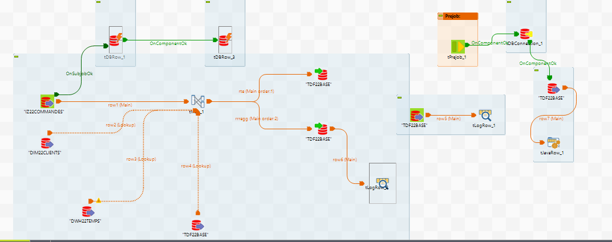

Intégration de données dans un datawarehouse

Job Talend d’alimentation d’un datawarehouse (processus ETL)
Objectifs du programme national
Cette SAÉ vise à comprendre le rôle central de l’entrepôt de données dans un environnement décisionnel. L’objectif est d’apprendre à structurer les données autour d’un modèle adapté (faits et dimensions), puis à alimenter le datawarehouse à partir de sources hétérogènes. L’étudiant est amené à analyser l’architecture existante, définir un plan d’alimentation et garantir l’intégrité ainsi que la cohérence des données intégrées. Cette SAÉ introduit également les principes des processus ETL, indispensables dans la chaîne décisionnelle.
Compétences du programme mobilisées
- Traiter des données à des fins décisionnelles
- Valoriser une production dans un contexte professionnel
- Comprendre l’organisation des données de l’entreprise
- Identifier et résoudre des problématiques d’intégration de sources hétérogènes
- Tester, corriger et documenter un programme
- Choisir des indicateurs pertinents pour communiquer des résultats
Méthodologie et outils utilisés
La démarche a débuté par l’analyse de la structure du datawarehouse cible ainsi que des sources de données à intégrer. Un plan d’alimentation a été défini en identifiant les transformations nécessaires (nettoyage, typage, jointures, normalisation). L’intégration a été réalisée via Talend Open Studio, en construisant des jobs ETL permettant d’extraire, transformer et charger les données automatiquement. Des tests de validation ont été effectués afin de garantir la qualité, la cohérence et l’intégrité des données chargées dans l’entrepôt.
Ce que j’ai appris
- Comprendre le rôle stratégique du datawarehouse dans la prise de décision
- Mettre en œuvre un processus ETL complet avec Talend
- Gérer l’intégration de données issues de sources hétérogènes
- Assurer la qualité et l’intégrité des données intégrées
- Adopter une démarche rigoureuse de test et de documentation